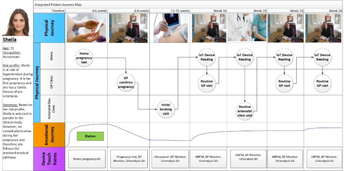
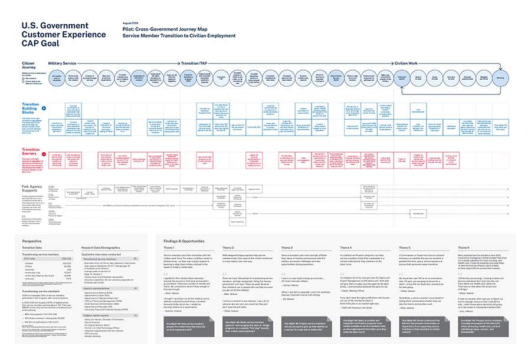

Multi-actor journey map
About
A multi-actor journey map places two or more parallel journeys on a shared timeline — for example a patient and a clinician, or a buyer and a seller — so you can see where their experiences intersect, hand off, or diverge. Each actor has its own lane of actions, thoughts, and emotions, and the vertical alignment between lanes reveals dependencies and friction at the seams between people. It is the tool for experiences that are fundamentally relational rather than solo: where one person's smooth moment depends entirely on another person's action happening at the right time.
When to use
Use a multi-actor journey map for two-sided marketplaces, care coordination, B2B handoffs, or any service where one person's experience depends on another's. It is especially powerful for diagnosing breakdowns that occur in the gaps between roles — the moments no single-actor map would ever surface.
When not to use
Do not use a multi-actor map for genuinely single-user experiences; the extra lanes add noise without insight, and a standard journey map will read more clearly. It also loses meaning when the actors don't actually interact — parallel but unconnected journeys belong on separate maps.
References
Examples
Click any example to view full size and visit the original source.

